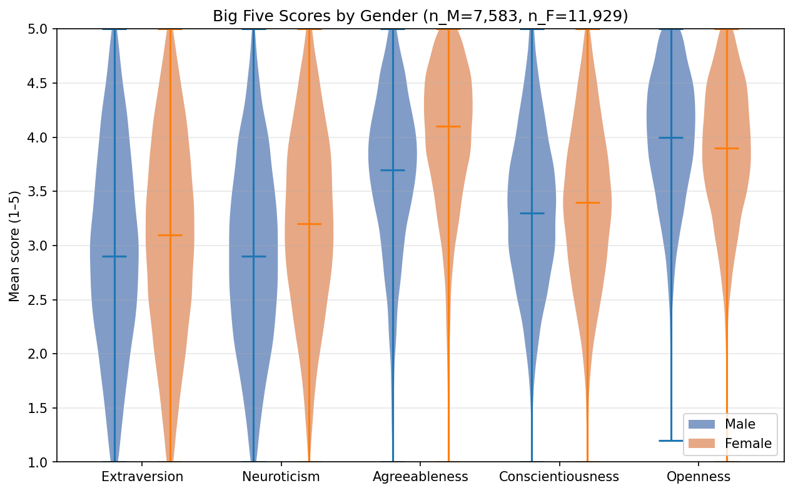
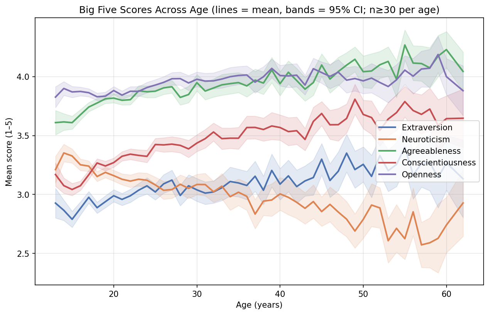

big5-mini-explorer
用 pandas 與 matplotlib 對 Big Five 五大人格資料做迷你探索分析的小專案。
Goal
在 Open Psychometrics Project 公開的 Big Five 線上問卷資料（n ≈ 19,700）上做迷你探索，回答兩個問題： (1) 五因子分數在男女之間是否存在可觀察的差異？ (2) 五因子分數是否隨年齡呈現有意義的趨勢，並符合人格心理學的成熟原則（maturity principle）？
Procedure
- 從 Open Psychometrics Project 下載 50-item IPIP Big Five 問卷的原始檔（tab-separated，2012 年蒐集，共 19,719 筆）。
- 以 Python 寫資料清理模組
load_clean_data()，過濾不合理年齡（13–80 歲）與未填性別的回應，剃除約 0.6%。 - 依 IPIP 標準鍵把反向計分題（如「我不太說話」對應 Extraversion）反向後，把每位受試者的 50 題濃縮成五個因子的平均分數（範圍 1–5），便於跨因子比較。
- 用 violin plot 比較男女兩個次群體在五因子上的分布形狀、中位數與四分位數，呈現性別差異。
- 把每一歲（age）的因子平均畫成趨勢線並加上 95% 信賴區間（僅納入 n ≥ 30 的年齡），觀察年齡梯度。
Outcome


Caveats
- 樣本代表性：受試者為網路自願填答者，並非機率抽樣；2012 年的 demographics 偏向年輕、英語使用者，無法直接推論一般人口。
- 方法侷限：五因子分數源自 50-item IPIP 自陳量表，可能受社會期許偏誤、回答風格與缺漏值影響；本分析未做題目層級的信效度檢驗。
- 橫斷推論：年齡趨勢來自橫斷資料，不能直接推論為個體一生的發展軌跡，仍可能反映世代效應（不同年代成長者的人格基線本就不同）。
Repository
原始碼與 notebook 均開源於 GitHub： github.com/ireneho3507/big5-mini-explorer